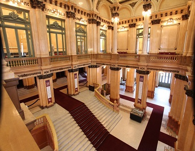
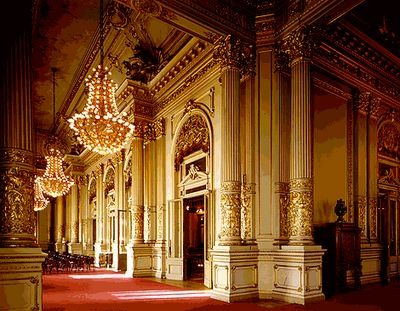
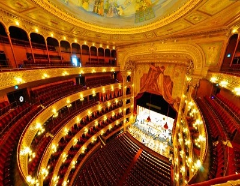
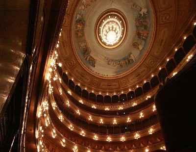

Foyer
La entrada principal se encuentra sobre la calle Libertad, bajo una marquesina de hierro forjado, y conduce a un gran foyer adornado por columnas con basamento de mármol rojo de Verona, recubiertas de estuco para imitar el mármol botticino y con aplicaciones de estuco dorado.
Salones
El tradicional paseo durante los intervalos permite la visita a los grandes salones del Colón. El Foyer de los Bustos, decorado con los bustos de los compositores Mozart, Bellini, Bizet, Beethoven, Gounod, Rossini, Verdi y Wagner, realizados por Luis Trinchero y con el grupo escultórico llamado El Secreto, de Eberlein, comunica con el Salón Blanco. De estilo renacentista francés, es el antepalco de la platea balcón en funciones oficiales y se utiliza frecuentemente para reuniones formales, conferencias y agasajos. Dos grandes galerías, coronadas por vitrales, ofrecen una vista muy amplia del hall de entrada y conducen de la Galería de los Bustos al Salón Dorado.
Sala principal
La sala principal (una de las mayores del mundo) tiene 32 metros de diámetro, 75 de profundidad y 28 de altura en un entorno de estilo ecléctico, que combina el neorrenacentismo italiano y el barroco francés, con una rica decoración en dorado y escarlata. Dividida en siete niveles, tiene capacidad para 2487 espectadores sentados y alcanza los 3000 si se incluyen los de pie. El escenario tiene 35 metros de profundidad por 34 de ancho y la boca de escena es una de las más grandes en los teatros con forma de herradura a la italiana.
Cupula
Originalmente la cúpula de la sala principal fue pintada por Marcel Jambon, un artista francés, y contó con la colaboración de Jean Baptiste Edouard Detaille. Las pinturas fueron realizadas en su atelier de París y representaban al dios Apolo en un carro tirado por cuatro corceles blancos, presidiendo un cortejo de musas.